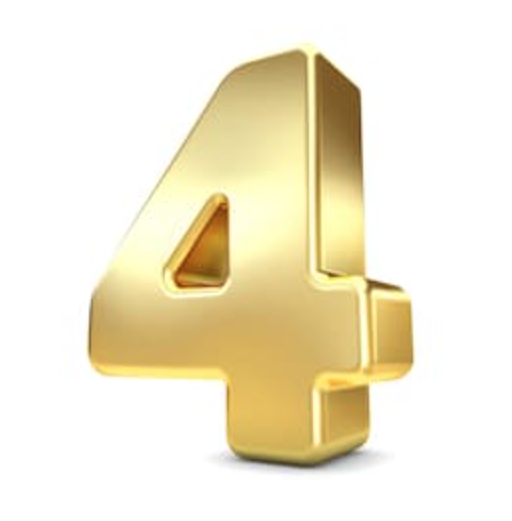

| |
Odyssey of the Mind World Champion 2015: I participated in Odyssey of the Mind in 5th grade with my classmates. We worked
together to create a skit, demonstrating creative ideas based on the rules given with the prompt. We prepared for many
long hours to perform well in both the spontaneous round and the long-term performance. Our hard work paid off, and we
won the district, regional, and state levels of the competition. We were given the opportuntiy to compete in World Finals
in Ames, Iowa. In the last round of the competition, we placed 6th in the world.
|
| |
Mini Med School Diploma 2019: I took a medical course introducing high-schoolers to the many aspects of medicine in our
world. Starting September 2019, I attended this 8-week course and learned many things about medicine. I
graduated this program in November 2019, with a diploma certifying that I took part in the course.
|
 |
Executive Officer of School Computer Science Club 2020: After being a member of the Computer Science Club in my freshmen
year, I tried out to become a board member of the club. To do so, I demonstrated knowledge in computer science
outside of what is currently being taught through computer science courses in school. Thus, I was selected to be an
Executive Officer of the Computer Science Club.
|
|  |
Project Team Lead at C4T 2020: I am currently the Team Lead for Scratch development at Code 4 Tomorrow, a non-profit
organization aiming to teach students computer science concepts. After being selected as a teacher for C4T in June 2020, I
was given a higher role in the organization. As a Project Lead, I hold a leadership role, enabling me to be able to
contribute more and give back more to the community.
|
| |
Presidential Volunteering Service Gold Award 2020: At age 15, I volunteered for 100+ hours in my community for the year
of 2020. For this, I was awarded the PVSA Gold Award in 2020.
|
 |
Intern at Enspire Academy 2020: I have been with Enspire Academy for 3 years, and I am now an intern at this leadership
training academy. As an intern, I demonstrate leadership and confidence through writing and publishing articles on the
Enspire Academy blog, dealing with issues pertaining to groups of people worldwide. Being an intern at Enspire Academy
is giving me real-world experience with public speaking, organization, and management.
|